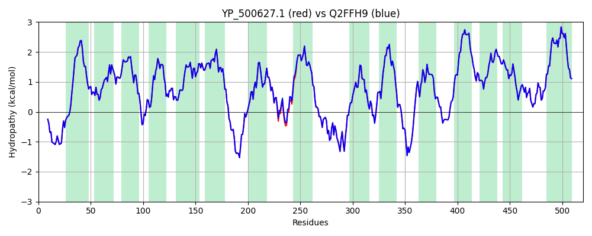

Hit Accession: Q2FFH9
Hit TCID: 2.A.47.1.11
Hit Description: gnl|BL_ORD_ID|13216 gnl|TC-DB|Q2FFH9|2.A.47.1.11 Sodium-dependent dicarboxylate transporter sdcS - Staphylococcus aureus (strain USA300).
Mach Len: 520
e:0.000000
Query TMS Count : 15
Hit TMS Count: 15
TMS-Overlap Score: 14.900000
Predicted Substrates:CHEBI:30143;lithium(1+), CHEBI:9175;sodium(1+), CHEBI:23688;dicarboxylic acid dianion, CHEBI:15595;malate(2-), CHEBI:30031;succinate(2-), CHEBI:42511;fumarate(2-)
BLAST Alignment:
Score: 2622 , Bit scores: 1014 bits, E-value: 0.0e+00, Alignment length: 520, Percentage identity: 100
Query: 1 MAYFNQHQSMISKRYLTFFSKSKKKKPFSAGQLIGLILGPLLFLLTLLFFHPQDLPWKGVYVLAITLWIATWWITEAIPIAATSLLPIVLLPLGHILTPEQVSSEYGNDIIFLFLGGFILAIAMERWNLHTRVALTIINLIGASTSKILLGFMVATGFLSMFVSNTAAVMIMIPIGLAIIKEAHDLQEANTNQTSIQKFEKSLVLAIGYAGTIGGLGTLIGTPPLIILKGQYMQHFGHEISFAKWMIVGIPTVIVLLGITWLYLRYVAFRHDLKYLPGGQTLIKQKLDELGKMKYEEKVVQTIFVLASLLWITREFLLKKWEVTSSVADGTIAIFISILLFIIPAKNTEKHRRIIDWEVAKELPWGVLILFGGGLALAKGISESGLAKWLGEQLKSLNGVSPILIVIVITIFVLFLTEVTSNTATATMILPILATLSVAVGVHPLLLMAPAAMAANCAYMLPVGTPPNAIIFGSGKISIKQMASVGFWVNLISAIIIILVVYYVMPIVLGIDINQPLPLK 520
MAYFNQHQSMISKRYLTFFSKSKKKKPFSAGQLIGLILGPLLFLLTLLFFHPQDLPWKGVYVLAITLWIATWWITEAIPIAATSLLPIVLLPLGHILTPEQVSSEYGNDIIFLFLGGFILAIAMERWNLHTRVALTIINLIGASTSKILLGFMVATGFLSMFVSNTAAVMIMIPIGLAIIKEAHDLQEANTNQTSIQKFEKSLVLAIGYAGTIGGLGTLIGTPPLIILKGQYMQHFG+EISFAKWMIVGIPTVIVLLGITWLYLRYVAFRHDLKYLPGGQTLIKQKLDELGKMKYEEKVVQTIFVLASLLWITREFLLKKWEVTSSVADGTIAIFISILLFIIPAKNTEKHRRIIDWEVAKELPWGVLILFGGGLALAKGISESGLAKWLGEQLKSLNGVSPILIVIVITIFVLFLTEVTSNTATATMILPILATLSVAVGVHPLLLMAPAAMAANCAYMLPVGTPPNAIIFGSGKISIKQMASVGFWVNLISAIIIILVVYYVMPIVLGIDINQPLPLK
Sbjct: 1 MAYFNQHQSMISKRYLTFFSKSKKKKPFSAGQLIGLILGPLLFLLTLLFFHPQDLPWKGVYVLAITLWIATWWITEAIPIAATSLLPIVLLPLGHILTPEQVSSEYGNDIIFLFLGGFILAIAMERWNLHTRVALTIINLIGASTSKILLGFMVATGFLSMFVSNTAAVMIMIPIGLAIIKEAHDLQEANTNQTSIQKFEKSLVLAIGYAGTIGGLGTLIGTPPLIILKGQYMQHFGYEISFAKWMIVGIPTVIVLLGITWLYLRYVAFRHDLKYLPGGQTLIKQKLDELGKMKYEEKVVQTIFVLASLLWITREFLLKKWEVTSSVADGTIAIFISILLFIIPAKNTEKHRRIIDWEVAKELPWGVLILFGGGLALAKGISESGLAKWLGEQLKSLNGVSPILIVIVITIFVLFLTEVTSNTATATMILPILATLSVAVGVHPLLLMAPAAMAANCAYMLPVGTPPNAIIFGSGKISIKQMASVGFWVNLISAIIIILVVYYVMPIVLGIDINQPLPLK 520 | Protein Hydropathy Plots: |
|---|
| |
Pairwise Alignment-Hydropathy Plot:
|
|---|
|  |